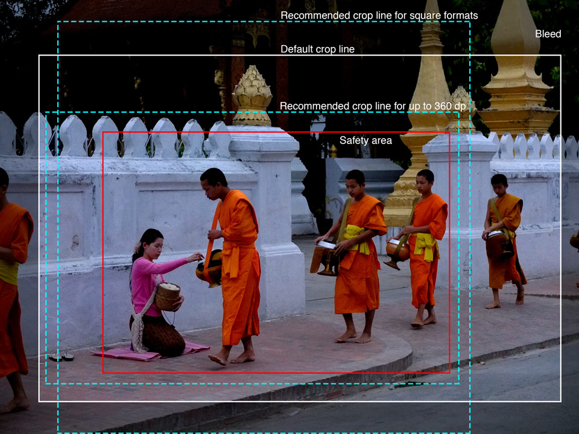

Full Size Image
Alms Giving Ceremony © Simon Bächler CC BY-NC-SA
Responsive Variants
100x100 px
The avatar image uses the bleed if available for the square aspect ratio while the safety area is protected.
240 px
Crops never cut into the safety area.
320 px
This is still the same framing as the smaller images because the crop area has a maximum defined width of 320 px.
360 px
This size uses a different crop region.
640px
From this size on upwards the full image area is used.
640x640px Square Aspect Ratio
A special region is defined for square aspect ratio target sizes.
Source Image

Production Chain
The XMP metadata has been written to the image using the RMD Adobe Photoshop plugin and the XMP RMD extension to verify it.
The image server is based on Thumbor, using the Universal Images Filter.